Here is an example of a git use-case. I created a repository on github (test.git) and cloned it. The default branch was named main instead of the usual master.
Clone
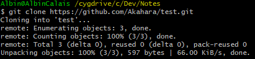
Add a file
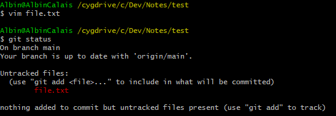
Stage the file
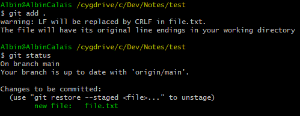
Commit
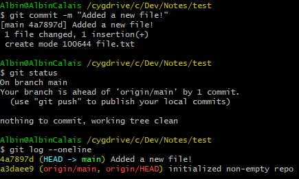
Push
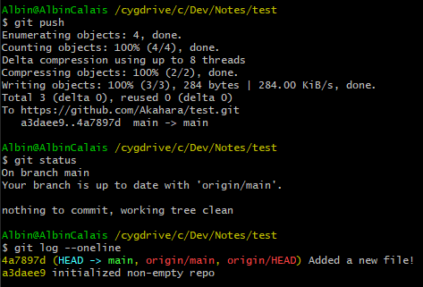
Switch to a new branch
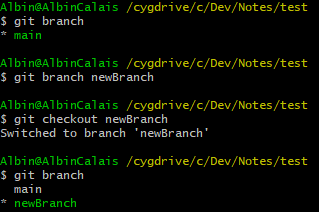
Remove the file
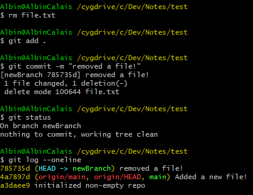
Merge the 2 branches
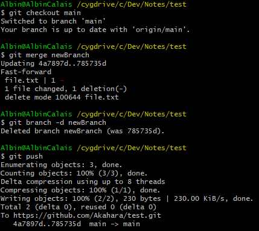
Pull with a conflict
I created a file named conflict.txt and someone else also did, we both wrote a single line and git does not know how to handle the situation, it gives me a merge conflict that I have to resolve myself. 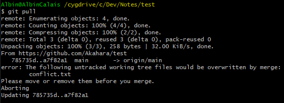 To start resolving the conflict, we must first commit what was not commited. 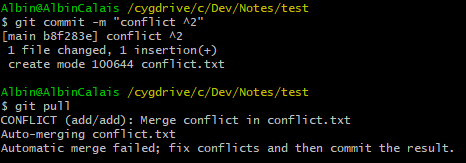 The conflicting file : 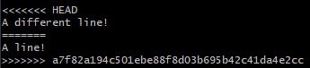 conflicts are marked with <<< and >>>, above the === line is the current file and below is the file as it is currently on the remote. To fix the conflict you can do whatever, keep both parts, remove one or both... Never leave the <<< === and >>> lines!
To finish fixing the conflict, commit one last time
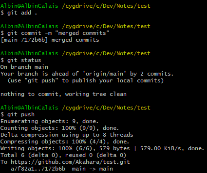